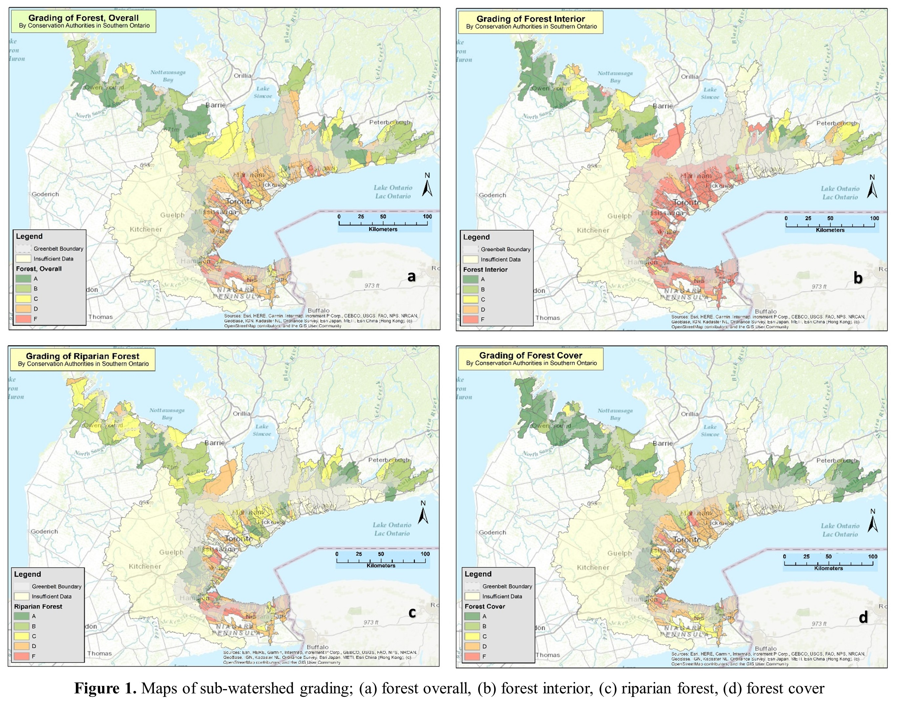
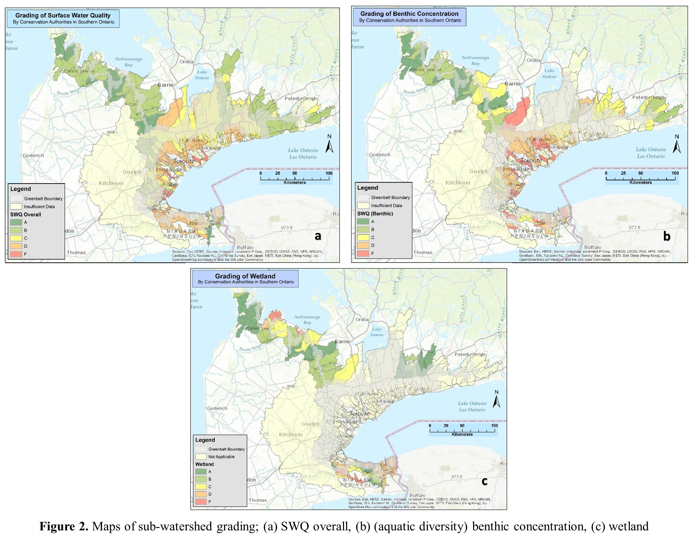

Land Classifications
The Southern Ontario Land Resource Information System (SOLRIS) dataset contains data on land cover within the Greater Golden Horseshoe (GGH), specifically the Ontario Greenbelt.
The dataset provides information in hectares (ha) for three time periods: SOLRIS 1 (2002-2003), SOLRIS 2 (2011-2012), and SOLRIS 3 (2016-2017).
The dataset classifies different types of land cover within the Greenbelt. Table 1 displays the direction of change from SOLRIS 1 to SOLRIS 2 to SOLRIS 3 for each land cover type.
Figure 1 visualizes the trends of change over time among the three SOLRIS datasets within the Greenbelt.
Watershed Report Cards
Conservation authorities in Southern Ontario assess and grade the quality of forests and watersheds.
The grading considers factors like water, soil, and air quality, species presence, and biodiversity.
Grades range from A to F, indicating areas needing conservation or restoration.
Authorities collaborate with communities and promote sustainable practices while managing recreational activities.
Forest conditions within the conservation authority regions are evaluated using various indicators to determine the well-being and long-term viability of forest ecosystems.
These indicators include forest cover, forest interior, and riparian forests, which are assessed based on factors like species diversity, distribution of tree age classes, and the presence of invasive species.
Data on these indicators are commonly collected through field surveys and remote sensing technologies. Out of the 294 of 298 regions that reported forest conditions data, there is a
total of 26 sub-watershed regions that are in ‘Excellent’ condition, 96 regions in ‘Decent/Good’ condition and 172 regions in ‘At-Risk’ condition.
The condition of surface water quality (Figure 2a) within the conservation authority regions are evaluated using several natural factors. The approach involves
collecting water quality data from various monitoring stations within a watershed region and comparing the results against established targets or guidelines for different parameters, such as nutrients, bacteria, and metals. Out of the 192 (of 298) regions that reported surface water
quality data, there is a total of 10 sub-watershed regions that are in ‘Excellent’ condition, 105 regions in ‘Decent/Good’ condition and 77 regions in ‘Poor’ condition